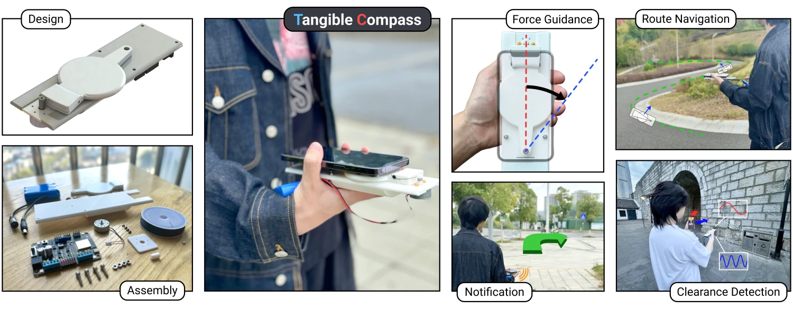
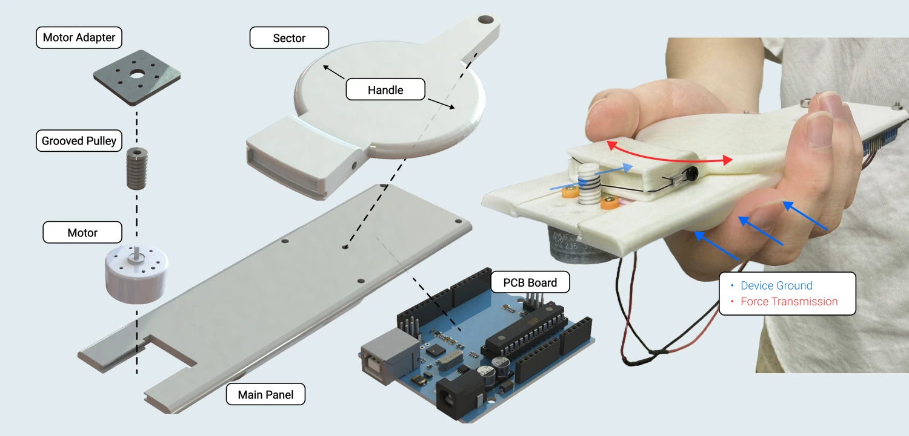
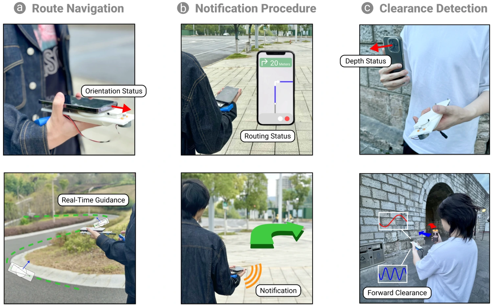

Motivation
While smartphone map navigation provides a convenient outdoor travel experience, its visual, audio, and vibration feedback
mechanisms may fail to meet the accessibility needs of particular users or account for temporary obstacles. Various devices have
been developed to overcome these limitations, but they are often accompanied by high prices or technological barriers, hindering
widespread adoption and research replication.
To address this, Tangible Compass is introduced as a low-cost, open-source handheld haptic device acting as an add-on for
smartphone navigation. It provides force guidance in various accessible navigation scenarios through intuitive kinesthetic cues.
Design

Tangible Compass is a compact one Degree of Freedom (1-DoF) handheld kinesthetic device transmitting forces in the left/right direction. It is designed and built from basic 3D-printed parts and off-the-shelf electronic components to feature low-cost and DIY-friendly accessibility.
Interactions

Tangible Compass's functionality is achieved through streaming simulated smartphone navigation data. Orientation deviation on a
navigating route is rendered through a haptic gradient force to guide the user back toward the correct forward orientation—a
"tangible compass" through resistive push.
Beyond standard navigation, Tangible Compass demonstrates multiple application scenarios—waypoint approaches or obstacle indication—highlighting the flexibility of the kinesthetic feedback channel.
BibTeX Citation
@inproceedings{10.1145/3758871.3758914,
author = {Pan, Zhaohan and Ge, Gaolin and Jiang, Zhuojian and Meng, Zhihao and Wang, Lushan and Wu, Hongrui and Wang, Lechen and Liang, Jingyang and Wen, Hiuting},
title = {Tangible Compass: An Affordable and DIY-Friendly Handheld Kinesthetic Device for Haptic Accessible Navigation},
booktitle = {Proceedings of the Twelfth International Symposium of Chinese CHI (CHCHI '24)},
year = {2025},
doi = {10.1145/3758871.3758914}
}